B03902082 資工三 江懿友
我在 constructor 裡面會先做 median cut algorithm，方法是我會先建構亮度的 area sum table，其中亮度的計算方法根據提供的論文是 Y = 0.2125R+0.7154G+0.0721B， 並且加總亮度的時候我會按照他被投影回球面後的面積加權，因此赤道附近的能量會不變， 南北極的能量則會被縮小。
接著我按照論文的方法，一開始 WorkList 中的 region 是整塊 light probe。 之後每個 iteration 我都把 worklist 中的每個 region 拿出來，從長邊把它切成兩個 region，下刀位置是使用 binary search 找出能盡量平分 region 能量的位置。然後把 切好的兩個新 region 加回 worklist 裡面。如此 iterate 6 次，則就會大約有 64 個 能量大致相等的區域。這邊要小心的是有時候 worklist 裡面的 region 已經小到沒辦法 再切了，這時候就要跳過不要切它，否則就有可能切出面積為零的 region 。
Mediam cut 結束後，就把每個 region 的重心算出來，然後紀錄光源位置跟強度， 強度是 region 內每個 pixel 根據其投影到球面上的面積大小的加權總和。
Sample_L() 的作法是我用傳進來的 LightSample 裡的隨機變數來隨機挑一個光源， 然後就回傳 p 射到對應的光源的射線方向跟光源的顏色。
| Number of samples and which scene | Reference method | My method | Speedup (Ref time / My time) |
|---|---|---|---|
| 4 | 1.3s | 0.4s | 3.25 |
| 4 New | 1.3s | 0.5s | 2.6 |
| 16 | 3.7s | 0.9s | 4.1 |
| 16 New | 4.6s | 1.2s | 3.8 |
| 64 | 14.8s | 2.7s | 5.5 |
| 64 New | 18.3s | 4.1s | 4.5 |
| 256 | 57.9s | 9.9s | 5.8 |
| 256 New | 66.2s | 15.5s | 4.3 |
當 sample 數目是 16, 64 的時候，default method 的結果圖看起來有較多的雜訊， 不過這應該是正常現象，因為 my method 用到的 sample point 最多只有 64 個，而 default method 有可能被用到的 sample point 則有無數個；因此在 sample point 較少的時候 my method 取出來的 sample 的 variance 會比較小。
在看起來比較暗的那個 scene，my method 的結果圖在車子前端，尤其是引擎蓋的部份 看起來比 default method 還要亮，應該是因為 my method 是使用 median cut 後的 region 重心當作點光源，因此跟 default method 有差異。
在比較亮的那個 scene (New)，my method 的車子尾部的影子非常散亂，這應該是因為 高能量的區域被切成很多塊後，形成了很多個相鄰的光源，因此車尾才會形成很多個 彼此重疊的影子，並且影子跟影子都是形狀類似但是位置有一點點差距的樣子。
| Number of samples | Reference method | My method |
|---|---|---|
| 4 | 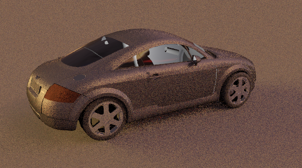 | 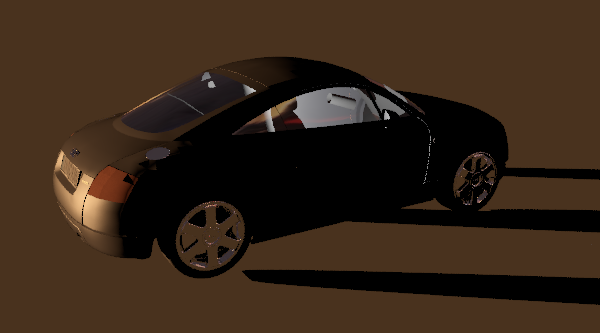 |
| 4 | 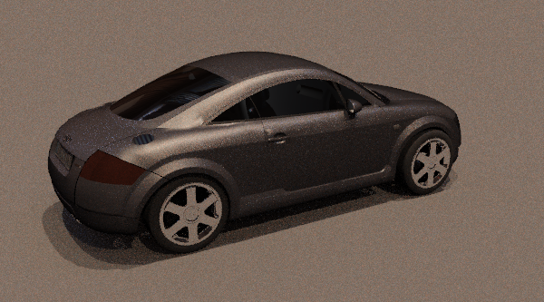 | 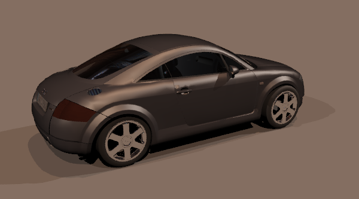 |
| 16 | 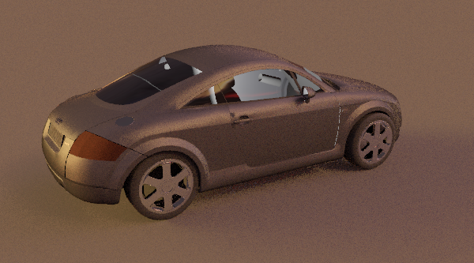 | 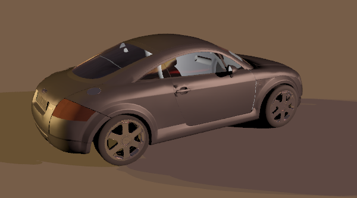 |
| 16 | 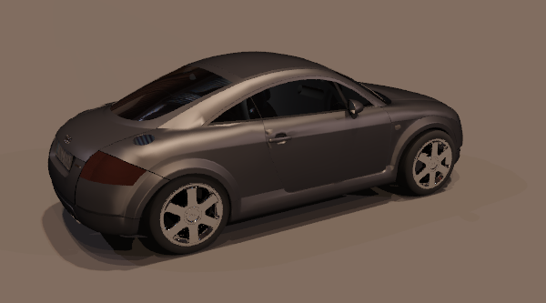 | |
| 64 | 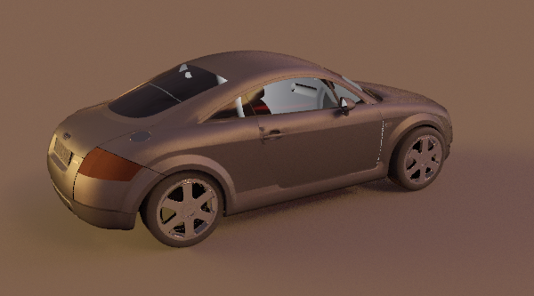 | 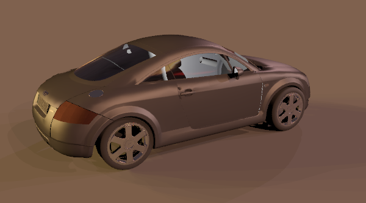 |
| 64 | 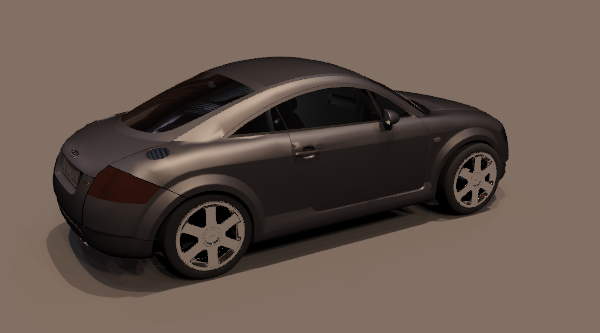 | |
| 256 | 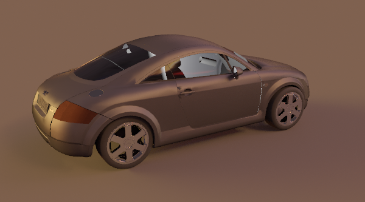 | 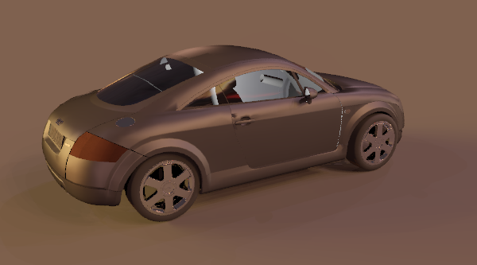 |
| 256 | 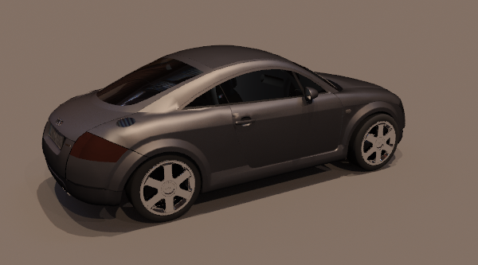 |
OS: Linux / 64 bit
Memory: 16GB
CPU model: Intel(R) Xeon(R) CPU E3-1231 v3 @ 3.40GHz
CPU frequency: 3.40 GHz (Max 3.80 GHz) (Frequency may vary due to turbo boost)
CPU core: 8 cores